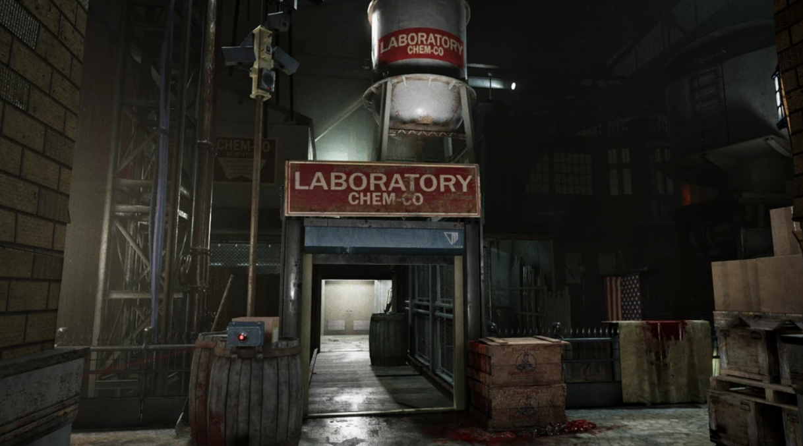

неофициальное убежище · The Outlast Trials

Пристань
Пристань (ориг. The Docks) — место в игре The Outlast Trials, испытательный полигон главного актива Франко Барби на объекте Синьяла.
Огромный испытательный полигон внутри ангара объекта Синьяла в пустыне Аризоны, построенный в период с декабря 1959 по март 1960 годов в виде промышленного гангстерского района с доками и лабораториями, символизирующего духовную среду обитания главного актива Франко Барби. Испытуемые реагенты должны проходить различные испытания в доках и противостоять агрессивным экс-попам во главе с безумным гангстером Франко Барби.
Учёные и охрана Меркофф следили за ходом всех испытаний через безопасные зоны. После завершения испытания реагентами, все экс-попы также покидают полигон, и в области начинает работу бригада уборщиков Меркофф, готовящие территорию к новому испытанию.